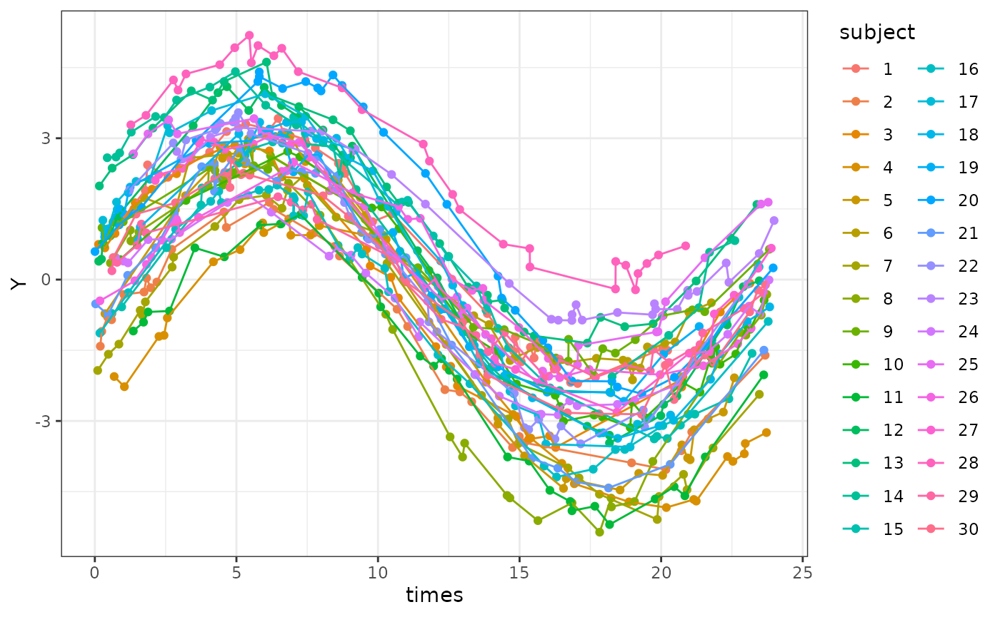
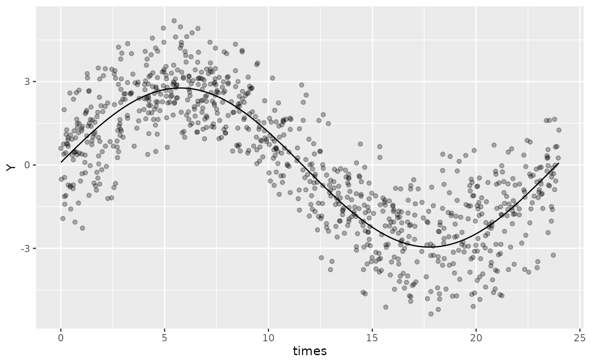
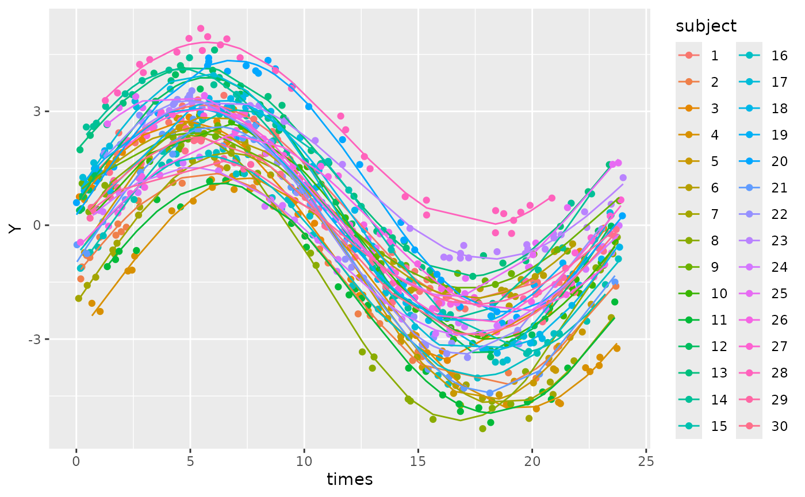

GLMMcosinor allows specification of mixed models accounting for fixed and/or random effects. Mixed model specification follows the lme4 format. See their vignette, Fitting Linear Mixed-Effects Models Using lme4, for details about how to specify mixed models.
Data with subject-level differences
To illustrate an example of using a model with random effects on the cosinor components, we will first simulate some data with id-level differences in amplitude and acrophase.
f_sample_id <- function(id_num,
n = 30,
mesor,
amp,
acro,
family = "gaussian",
sd = 0.2,
period,
n_components,
beta.group = TRUE) {
data <- simulate_cosinor(
n = n,
mesor = mesor,
amp = amp,
acro = acro,
family = family,
sd = sd,
period = period,
n_components = n_components
)
data$subject <- id_num
data
}
dat_mixed <- do.call(
"rbind",
lapply(1:30, function(x) {
f_sample_id(
id_num = x,
mesor = rnorm(1, mean = 0, sd = 1),
amp = rnorm(1, mean = 3, sd = 0.5),
acro = rnorm(1, mean = 1.5, sd = 0.2),
period = 24,
n_components = 1
)
})
)
dat_mixed$subject <- as.factor(dat_mixed$subject)A quick graph shows how there are individual differences in terms of MESOR, amplitude and phase.
ggplot(dat_mixed, aes(times, Y, col = subject)) +
geom_point() +
geom_line() +
theme_bw()
A single component model with random effects
For the model, we should include a random effect for the MESOR, amplitude and acrophase as these are clustered within individuals.
In the model formula, we can use the special amp_acro[n] which represents the nth cosinor component. In this case, we only have one component so we use amp_acro1. Following the lme4-style mixed model formula, we add our random effect for this component and the intercept term (MESOR) clustered within subjects by using (1 + amp_acro1 | subject). The code below fits this model
mixed_mod <- cglmm(
Y ~ amp_acro(times, n_components = 1, period = 24) +
(1 + amp_acro1 | subject),
data = dat_mixed
)This works by replacing the amp_acro1 with the relevant cosinor components when the data is rearranged and the formula created. The formula created can be accessed using .$formula, and shows the amp_acro1 is replaced by the main_rrr1 and main_sss1 (the cosine and sine components of time that also appear in the fixed effects).
mixed_mod$formula
#> Y ~ main_rrr1 + main_sss1 + (1 + main_rrr1 + main_sss1 | subject)
#> <environment: 0x5fe74fcaa878>The mixed model can also be plotted using autoplot, but some of the plotting features that are available for fixed-effects models may not be available for mixed-effect models.
autoplot(mixed_mod, superimpose.data = TRUE)
The summary of the model shows that the input means for MESOR, amplitude and acrophase are similar to what we specified in the simulation (0, 3, and 1.5, respectively).
summary(mixed_mod)
#>
#> Conditional Model
#> Raw model coefficients:
#> estimate standard.error lower.CI upper.CI p.value
#> (Intercept) -0.09323293 0.17907958 -0.44422246 0.25776 0.60263
#> main_rrr1 0.18030404 0.11089901 -0.03705402 0.39766 0.10398
#> main_sss1 2.85563889 0.09447419 2.67047288 3.04080 < 2e-16 ***
#> ---
#> Signif. codes: 0 '***' 0.001 '**' 0.01 '*' 0.05 '.' 0.1 ' ' 1
#>
#> Transformed coefficients:
#> estimate standard.error lower.CI upper.CI p.value
#> (Intercept) -0.09323293 0.17907958 -0.44422246 0.25776 0.60263
#> amp1 2.86132539 0.09431192 2.67647744 3.04617 < 2e-16 ***
#> acr1 1.50774038 0.03880616 1.43168171 1.58380 < 2e-16 ***
#> ---
#> Signif. codes: 0 '***' 0.001 '**' 0.01 '*' 0.05 '.' 0.1 ' ' 1We can see that the predicted values from the model closely resemble the patterns we see in the input data.
ggplot(cbind(dat_mixed, pred = predict(mixed_mod))) +
geom_point(aes(x = times, y = Y, col = subject)) +
geom_line(aes(x = times, y = pred, col = subject))
This looks like a good model fit for these data. We can highlight the importance of using a mixed model in this situation rather than a fixed effects only model by creating that (bad) model and comparing the two by using the Akaike information criterion using AIC().
fixed_effects_mod <- cglmm(
Y ~ amp_acro(times, n_components = 1, period = 24),
data = dat_mixed
)
AIC(fixed_effects_mod$fit)
#> [1] 2834.918
AIC(mixed_mod$fit)
#> [1] 144.208Aside from not being able to be useful to see the differences between subjects from the model, we end up with much worse model fit and likely biased and/or imprecise estimates of our fixed effects that we are interested in!